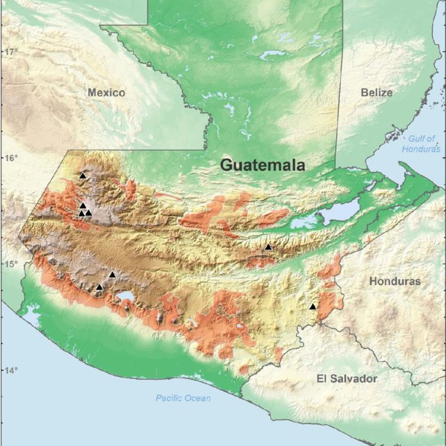
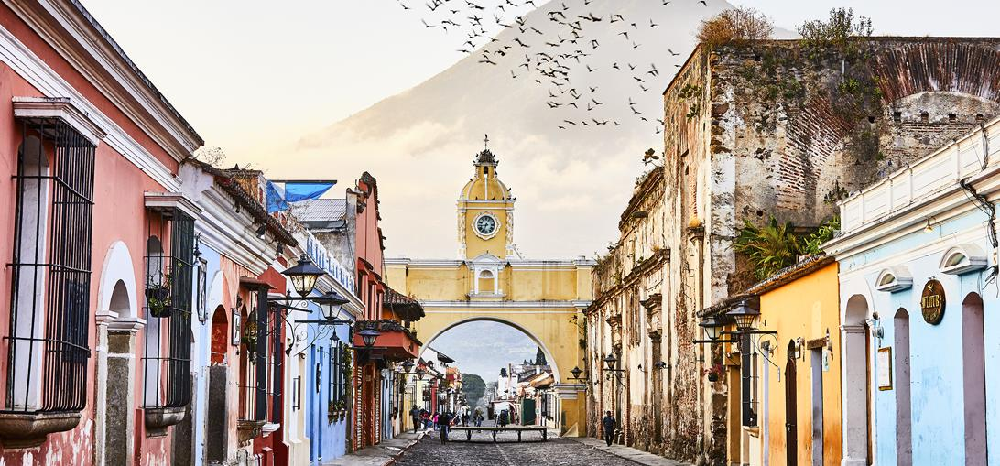
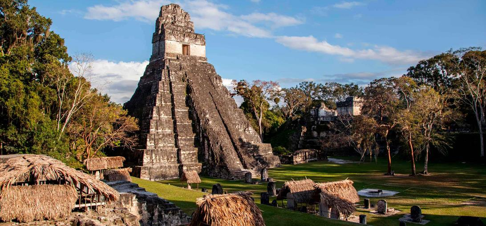
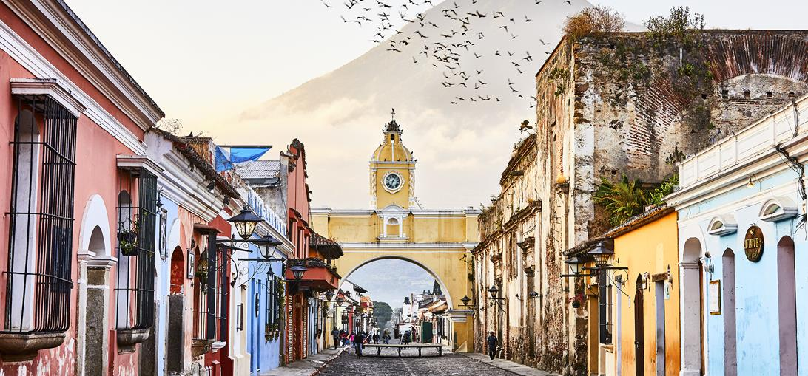
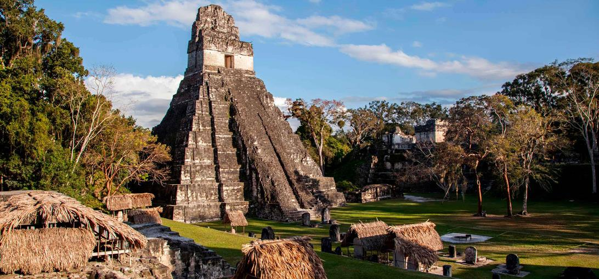

Many countries boast a unique culture, have a complex yet intriguing history, and promote their many tourist attractions based on their past or appealing landscapes. Different places have rich history and culture, and Guatemala is no exception. With amazing natural tourist attractions like Lake Atitlan, a beautiful lake surrounded by volcanoes and forests, and Tikal, a popular tourist area that gives a view into the way of the Mayans who used to live there, as Tikal was one of the major Mayan cities when it was still actively used.
Its culture is unique because the native Mayans were not entirely conquered by the Spanish, allowing them to continue their lifestyles yet still merge aspects of Spanish culture with their own. Some of this merged culture is still visible today, from meals like Kak'ik, a traditional stew created by Mayans unique to Guatemala, to the architecture of many buildings in town centers. Guatemala has a rich culture and vast history that is found nowhere else.

 


